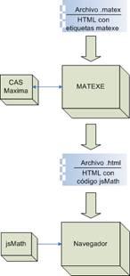

Matexe permite generar documentos que incluyen expresiones matemáticas calculadas dinámicamente. Es un programa publicado bajo la licencia GPL y puede descargarse en maxima.sourceforge.net

El programa permite crear documentos HTML con etiquetas especiales que permiten programar cálculos matemáticos, para producir finalmente un documento con expresiones matemáticas en formato gráfico.
Además, es posible producir en un mismo documento varias páginas con el mismo formato y diferentes valores en cada página. Esto puede ser útil, por ejemplo, para diseñar boletines de ejercicios con valores generados aleatoriamente en cada página.
Las expresiones matemáticas son procesadas por el paquete de cálculo simbólico Maxima.
El documento de entrada consiste en un archivo con extensión .matex cuyo formato es una extensión de código HTML con etiquetas propias reconocidas por Matexe.
Los documentos generados están en formato HTML con expresiones TeX incrustadas, por lo que es necesaria la librería jsMath para su correcta visualización.
Created with the Personal Edition of HelpNDoc: Easily create PDF Help documents